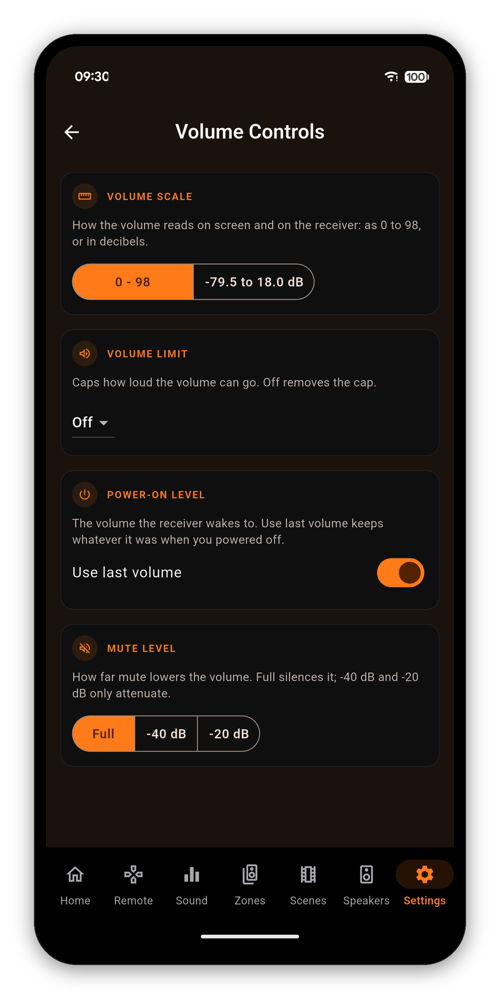

Four settings that between them decide how loud your receiver can ever get, what it does when it wakes, and how far Mute drops it. They live on the receiver, so they hold whether you use the app, the physical remote or the front panel.
Open Settings, tap Manage Receivers, tap your receiver, and scroll to Volume Controls - "Volume limit, power-on level, and mute depth". Everything on this page is written straight to the receiver, so it survives closing the app and applies to every way you control it.

How the volume reads, both on screen and on the receiver's own display. 0 - 98 is the relative scale most people know; -79.5 to 18.0 dB is the absolute scale, where 0.0 dB is reference level. If you have ever seen a review quote "-15 dB" and wondered how that maps to your dial, this is the switch that answers it.
A hard ceiling. Once set, nothing goes past it - not the app, not the physical remote, not the front-panel dial, because the limit lives on the receiver rather than in the app. The obvious use is protecting speakers or a room full of people from a mis-tap, and it is the setting to reach for before handing the remote to a house guest. Off removes the cap.
Use last volume is on by default: the receiver wakes to whatever it was at when you switched it off. Turn it off and you can pin a fixed level instead, so a late session at high volume never becomes an unpleasant surprise the next morning.
How far Mute drops the volume. Full silences it. -40 dB and -20 dB attenuate instead, which is the better choice when you want to hold a conversation over a film without losing your place in it.
Getting started · Home Screen · Scenes · Custom Icons · Sound · Graphic EQ · Speakers · Why a control is locked · The Assistant · Home Automation · Home Assistant dashboard · Zones · Remote · Radio (FM/AM) · On-Screen Display · Settings · Languages · Backup & Restore · Now Playing & HEOS
One-time purchase, no ads, no subscriptions. Connect in under a minute.